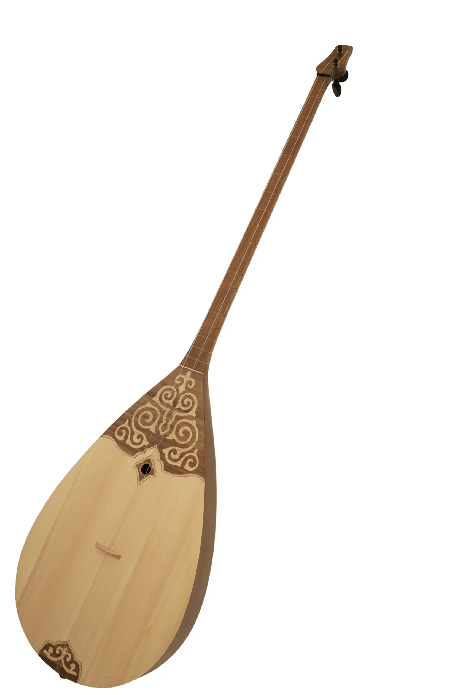

Как выбрать свою
первую домбру?
Подробный разбор 6 ключевых вопросов от ведущих мастеров DOMBYRA.KZ, который убережет вас от типичных ошибок новичка, сэкономит бюджет и поможет найти инструмент с поистине идеальным и теплым звучанием.

Покупка первой домбры — это удивительное начало творческого пути. Однако для новичка этот процесс часто сопровождается растерянностью: на рынке представлены сотни инструментов разного размера, материалов и стоимости. Неправильно выбранная домбра может испортить впечатление от игры, исказить постановку рук и, самое печальное, отбить желание учиться.
Чтобы помочь вам сделать осознанный выбор, наши потомственные мастера сформулировали **6 фундаментальных вопросов**, ответы на которые гарантируют покупку идеального стартового инструмента.
1. Форма корпуса: Каплевидная или Плоская?
Казахская домбра традиционно делится на два основных типа по форме корпуса:
- Каплевидная (округлая) — чаще относится к западному стилю исполнения (токпе). Корпус выдает глубокий, звонкий, взрывной звук с долгим сустейном. Идеальна для динамичной, виртуозной игры.
- Плоская (шертпе) — с плоской задней декой, более популярна в восточных и центральных регионах Казахстана. Обладает мягким, бархатистым, певучим и более приглушенным звуком, прекрасно подходящим для аккомпанемента к пению.
Совет мастеров: Для обучения детей и большинства новичков мы рекомендуем классический скругленный каплевидный корпус среднего размера. Он универсален в звучании и позволяет освоить любые стили кюев.
2. Порода дерева: Из чего рождается звук?
Дерево — это душа домбры. Разные части инструмента изготавливаются из разных пород:
- Верхняя дека (какпак) — самая важная деталь для резонанса. Она ВСЕГДА должна быть сделана из качественной **резонансной хвои (Тянь-Шаньская ель или Сибирский кедр)**. Ель дает яркий, открытый звук, а кедр — более глубокий и благородный.
- Корпус (шанак) — собирается из жестких лиственных пород. Для первого инструмента великолепно подойдет **красное дерево (махагони), береза или клен**. Профессиональные модели премиум-класса изготавливают из благородного черного ореха, палисандра или падука.
Избегайте домбр, полностью покрытых толстым непрозрачным слоем краски или дешевого глянцевого лака — это первый признак того, что под краской спрятано некачественное строительное дерево или даже МДФ, которые «глушат» звук.
3. Размер инструмента: Как подобрать под свой рост?
Домбра должна быть эргономичной. Выделяют три основных ростовки:
Детская (Small)
Для возраста 6-10 лет
Укороченный гриф, уменьшенный облегченный корпус.
Подростковая (Medium)
Для возраста 10-14 лет
Промежуточный размер, идеален для музыкальных школ.
Стандартная (Large)
Для взрослых и от 14 лет
Полноразмерный концертный и академический инструмент.
При правильной посадке правая рука должна свободно и без напряжения лежать локтем на верхнем скруглении корпуса, а левая — легко дотягиваться до крайних ладов на головке грифа.
4. Гриф и высота струн: Залог комфортных занятий
Самая частая ошибка новичков — покупка домбры со слишком высоким расстоянием от струн до грифа (более 4-5 мм). Из-за этого прижатие струн требует колоссальных усилий, пальцы быстро устают и начинают нестерпимо болеть, что полностью отбивает желание продолжать.
У качественной домбры гриф должен быть абсолютно ровным (без прогибов), лады тщательно отшлифованы и не царапать пальцы сбоку при скольжении, а оптимальное расстояние между струнами и 12-м ладом должно составлять всего **2.5 – 3 мм**.
5. Струны и колки: Держит ли инструмент строй?
Традиционные домбры комплектуются деревянными колками, которые держатся в отверстиях за счет силы трения. Однако для новичков идеальным решением станут **современные металлические колковые механизмы закрытого типа**.
Металлические колки крутятся мягко, плавно и позволяют точно настроить инструмент по тюнеру за секунды, а главное — они не «сползают» от перепадов влажности, надежно сохраняя строй. Струны лучше всего сразу установить качественные нейлоновые или флюорокарбоновые с умеренным натяжением.
6. Мастерская ручной работы или фабрика?
Дешевые сувенирные домбры из масс-маркета или базаров изготавливаются штамповочным методом из недосушенной прессованной древесины. Такие инструменты быстро деформируются под натяжением струн, дребезжат и не строят по ладам.
Домбра, созданная в профессиональной мастерской руками мастера, проходит долгий процесс естественной сушки дерева (не менее 3-5 лет) и тщательно настраивается вручную. Она не просто красиво звучит — она прослужит вам десятилетиями, с каждым годом раскрывая все более глубокий резонанс.
«Домбра — это не просто дерево и струны. Это живой резонатор души исполнителя. Качественный инструмент должен звучать легко и свободно с самого первого прикосновения новичка.»
Айым Эрнст, Основательница DOMBYRA.KZПодводя итог
Для легкого, приятного и результативного старта выбирайте домбру из высушенной березы или красного дерева с верхней декой из Тянь-Шаньской ели, оборудованную надежной колковой механикой и ровным грифом с высотой струн до 3 мм.
В нашей мануфактуре мы разработали специальную модель **«Bastau» (Исток)**, которая вобрала в себя все эти требования и является идеальным выбором для начинающих музыкантов любого возраста!
Хотите подобрать идеальную домбру?
Наши мастера лично проконсультируют вас, ответят на все вопросы и помогут выбрать или сконфигурировать ваш первый безупречный инструмент.